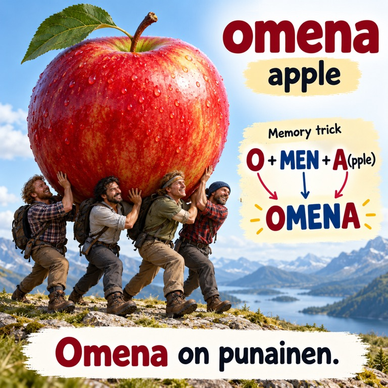

SUOMI
3000 Finnish Words
Build your everyday Finnish with illustrated words, pronunciation and examples.
A LITTLE EVERY DAY. A LOT OVER TIME.
Build the vocabulary for everyday life in Finland. Discover 3,000 English–Finnish words through pictures, pronunciation and examples that make them stick.
Finnish · Available now on iOS & Android

O + MEN + A(pple) → OMENA: a playful memory cue. Use the audio for pronunciation.
Real app screenshots · browse the preview
3,000Finnish word pairs
See. Hear. Remember.A word, a picture, a little context.
Your own paceMake a little space for learning.
CHOOSE YOUR LANGUAGE
Finnish and Swedish, now on iOS and Android.
All four apps are available to download.
Build your everyday Finnish with illustrated words, pronunciation and examples.
Build your everyday Swedish with 3,000 word pairs, illustrated lessons, recorded pronunciation and examples.
WHY 3,000 WORDS?
Some words come up again and again. Build a useful everyday core—and make more of what you read and hear feel familiar.
A small, focused collection.
3,000 core words —
a much larger share
of everyday use.
The words we use most often do a lot of the everyday work: talking about people, explaining a problem, making plans, reading a message or sharing how we feel.
That’s why we focus on a practical collection of 3,000 words. Give your study a clear direction, build familiarity through repeated use, and let the words you know help you make sense of new ones in context.
Build vocabulary for familiar situations and everyday communication as you work toward B1—the level corresponding to grade 3 in the YKI test. Take your learning into reading, listening, speaking and writing.
See the meaning in context, with complete examples and English translations.
In either language edition, listen to the word and the complete sentence. Repeat it aloud and connect sound with meaning.
Use illustrations, word-part links and mnemonic memory tricks. Then practise recalling the word before revealing it.
MORE WAYS TO MAKE IT STICK
Go beyond a translation. The Finnish app brings together a picture, a voice and a sentence, so every word has something to connect to.
Illustrated lessons and visual memory cues give you another way to recall a word. A small scene can make a big difference.
Listen to recordings of Finnish words and example sentences, then take a moment to say them aloud yourself.
See vocabulary in context with example sentences and English translations. Build a connection between a word and how it is used.
Automatic study reveals cards and plays audio at your chosen pace. Adjust recall time and practise with the app open.
Mark words as known or still learning. Search the collection and use filters to focus on the words you want to practise next.
Set optional word reminders. Download Finnish pictures and recordings ahead of time to keep studying when you are offline.
Both editions include free starter lessons and an optional one-time Premium upgrade.
HOW IT WORKS · ENGLISH → FINNISH / SWEDISH
You hear intohimo and recognise “passion”. But now you want to talk about your own passion. Can you find the Finnish word without seeing it first?
Recognising a word and recalling it yourself are different skills. That’s why our study cards start with the English word: you practise finding the Finnish or Swedish word before you see the answer.
Pause. Find the word in your memory. Then reveal it.
This is productive recall: practice that supports bringing words to mind when speaking or writing. Keep practising the other direction too, through listening and reading.
Why this direction helpsChoose a manageable set. Read the English prompt and try to say the Finnish or Swedish word before revealing the answer.
Reveal the word and explore its picture and example. For passion, connect into (enthusiasm) + himo (craving) → intohimo. Then hear it in context: “Intohimo näkyy työssä.” — “Passion shows in the work.” Memory cues help you remember; the audio teaches you how the word sounds.
Listen, repeat the word and try the example aloud. Mark how you did and revisit words you couldn’t recall. Aim to bring the word to mind, rather than simply recognise the answer.
ONE PURCHASE. MORE POSSIBILITIES.
Choose the complete Finnish or Swedish collection on iOS or Android. Pay once to unlock every illustrated flashcard, with images, audio and examples to help each word stick.
Learn at your own pace.
Without another monthly bill.
Try 211 complete A-set lessons, plus basic word pairs and word pronunciation across all 3,000 words. Upgrade when you’re ready.
FINNISH · iOS & ANDROID
LAUNCH PRICE · PER APP AND PLATFORM
€24.99Regular price after launch
€11.99one-time payment
No monthly fees. No subscription.
Download free. Unlock Premium inside your chosen app.
*Finland launch price for each platform. Check the app for your local price. iOS and Android purchases are separate.
SWEDISH · iOS & ANDROID
LAUNCH PRICE · PER APP AND PLATFORM
€24.99Regular price after launch
€11.99one-time payment
No monthly fees. No subscription.
Download free. Unlock Premium inside your chosen app.
*Finland launch price for each platform. Check the app for your local price. iOS and Android purchases are separate.
YKI 3000 focuses on vocabulary practice. It can support your wider language study, but it does not cover every exam skill or replace practice in reading, writing, listening and speaking. It is an independent app project, with no affiliation to the YKI exam organiser and no guaranteed exam result.
There are two language editions: Finnish and Swedish, each for Android and iOS. All four apps are available now on the App Store and Google Play. Learning progress and purchases are separate between apps and platforms.
All four apps are available now. Download Finnish on Google Play and Swedish on Google Play. For iPhone and iPad, get Finnish on the App Store or Swedish on the App Store.
In each app, basic cards, word pronunciation, search and reminders cover all 3,000 words. The 211-word A set includes complete illustrated lessons free. An optional €11.99 one-time Premium purchase per app and platform in Finland unlocks the complete illustrated collection, examples, translations, sentence audio and automatic study. There are no monthly fees or subscription renewals. Your local price appears in the app. See the full pricing details.
In both language editions, vocabulary text is bundled with the app. Pictures and recordings load as needed; download them in advance through Progress → Download for offline study (Finnish) or Offline study (Swedish) for full offline access. Automatic study works while the app is open and pauses when the phone locks or the app goes into the background.
Each app stores learning progress on your device and does not require a separate app account. Purchases use your platform’s store account. Keep a device backup: reinstalling the app can remove local progress, and restoring a purchase does not restore learning history. See the Finnish or Swedish privacy policy for details.